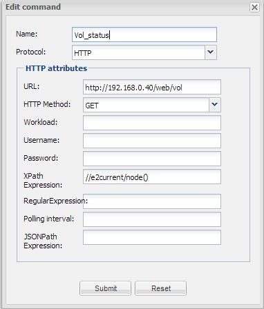
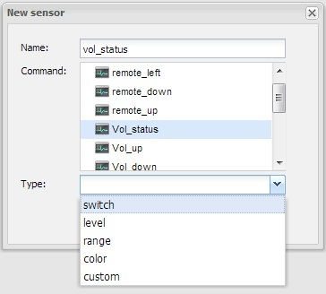
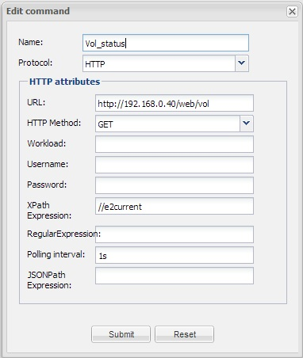

Need help to get the value 100 from the xml that my Vu+ digitalbox outputs:
<e2volume>
<e2result>True</e2result>
<e2resulttext>Status</e2resulttext>
<e2current>100</e2current>
<e2ismuted>False</e2ismuted>
</e2volume>
I dont get the XPath to work only gets N/A...

Please help me
{kind=link}
{kind=link}
{kind=link}
|
You should try this : //e2volume[1]/e2current[1] Regards, Pierre |
|
Hi Pierre, I tried that but N/A is still the result I test the XPath here aswell: |
|
Both "1" in red should be under bracket (removed by Wiki editor)... Pierre |
|
Pierre, Feeling stupid now but under bracket is? Haha http://en.wikipedia.org/wiki/Bracket |
|
Square bracket. |
|
Dosent work |
|
Maby I do something wrong with the sensor? What kind of type should it be?  |
|
Just in case you need it in future, you can escape brackets with \ [blah] (remove the white space) |
|
For arbitrary value ranges, you probably want a 'range' type of sensor. |
|
I guessed on that but I still gets N/A. What am I doing wrong? Is there any explanation to the XPath? Feels like I need something after the //e2volume1/e2current1 like @data node() text() I found this one... http://www.w3schools.com/xpath/ |
|
If this is all your xml: <e2volume> <e2result>True</e2result> <e2resulttext>Status</e2resulttext> <e2current>100</e2current> <e2ismuted>False</e2ismuted> </e2volume> Then xpath //e2current
should be sufficient for a Custom sensor. |
|
Will try it after work today |
|
It does not work Can I see the error message if there is any somewhere? |
|
You can have a look in OpenRemote/logs/dev/dev.log Pierre |
|
I made an xml testfile under webapps/private So the file is accessible via http://yourip:portnumber/private <evolume> <eresult>True</eresult> <eresulttext>Status</eresulttext> <ecurrent>100</ecurrent> <eismuted>False</eismuted> </evolume> For a range sensor use the following XPATH: number(concat(//evolume/ecurrent,""))
Strange that it doesn't seem to like numbers in the tag names. XML SPy evaluates your XML as well formed |
|
I looked in the log and I got this error: ERROR 2013-04-14 17:44:19,435 : There was an implementation error in the event listener associated with sensor 'Vol_status'. The listener implementation may not have started correctly : Could not set sensor because no polling interval was given |
|
Argh, I failed to see that you did not fill the Polling interval in your first post. Use a value of 1s (1 second) to test it. |
|
Yhaaaaa it works!! Thank allot! Now I get current channel and many nice things from the box |
|
The unanswered question is: Does it work with the original XML? (I did encounter problems with the number 2 in the tag names) |
|
Sorry, this is the working setting to get the info from a Enigma2 digitalbox.  If someone need more info on commands see these link: http://wiki.dbox2-tuning.net/wiki/index.php/Enigma2:WebInterface#Links RemoteKeys["POWER"]=116; |
|
Hello Martin, Glad to hear you and Pieter were able to debug this and get it finally working. Would you be interested in moving the Enigma information to a stand-alone wiki page? This way it won't get lost into forum noise so quickly. I can set up a wiki page for you to update/maintain? Thanks, – Juha |
|
Absolutely, just plain fun to be able to help. My next project is to get my Harman Kardon receiver to work with openremote. I run the controller on a raspberry and it should be able to talk to rs-232 with receiver. Some tips on where I can learn a bit more about openremote and rs-232? |
|
I want to make a slider where you set the volume, but to do this I have to send the volume in % to the box. I can do this by sending the following command: http://192.168.0.40/web/vol?set=set23 Where I send 0-100% and in this case it is volume 23%. How can I do this? Example: http://192.168.0.40/web/vol?set=set100 This is 100% in volume. |
|
Thanks for the offer to help. I've setup a default template for Enigma which you can start filling up here: OpenRemote 2.0 How To - Enigma 2 Digitalbox RS-232 is mostly done with IP-to-serial devices, although I'm not sure what the favorite is that people are using. For a direct RS-232, a Java implementation that accesses serial port is currently required, until we get a scripted access in place. |
|
http://192.168.0.40/web/vol?set=set${param} should do it. The value of ${param} depends on the min/max range sensor associated with the the slider, so in your case either range sensor with min/max value of 0/100 or a level type sensor which implicitly sets the range to 0/100 without extra configuration. |
|
Hmmm, I tested this again and now it does work with the original XML as you gave in the first post. Also the type conversion for the range sensor does not seem to be necessary. I am puzzled... |
|
Thanx, works fine |